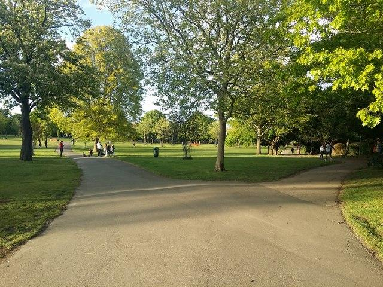

What’s on · N12
Woodside Park Green Walk

Sun 27 Sep
10:00–11:30
About the event
A guided walk linking residential streets, trees, open spaces and local history around Woodside Park.
What to expect
Wear comfortable shoes and bring water. The route takes place outdoors.
Back to calendar